NT族群：理性主義者
求知慾、好奇心、好勝心、對自主性要求很高、不輕易服從教條或指令、注重效率、創新、客觀、理性
建議：
- 給予新的挑戰，以解決問題為動力。
- 善用各種有用的工具來增加效率。
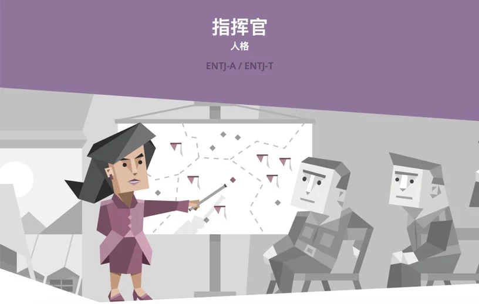
ENTJ
指揮官
- 優勢：善於指揮、顧全大局、全力以赴、講究策略、不怕障礙
- 特質：不拐彎抹角、立場堅定、看重長期目標、不在乎他人
- 勇避免過度驅使他人，你的要求常會對別人造成壓力。
- 多顧慮他人感受，多點欣賞與包容，容許他人犯錯。
- 適時放鬆、虛心傾聽他人意見。
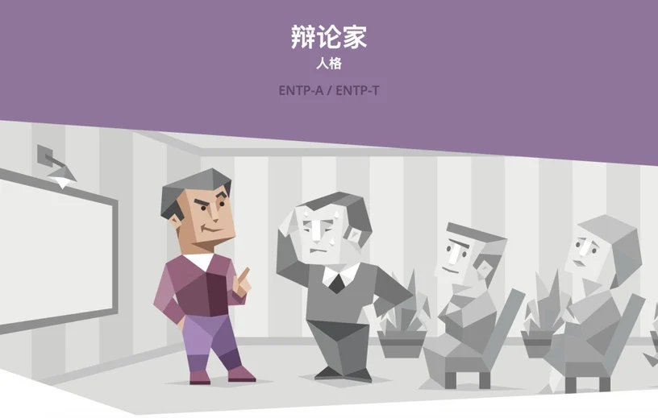
ENTP
辯論家
- 優勢：善於換位思考、口才佳、有說服力、足智多謀、激發想像
- 特質：能言善道、容易圈粉、挑戰傳統、旁徵博引
- 務實一點，多動手，而非一直空談。
- 在某些場合應暫停發表意見，避免破壞氣氛。
- 多主動去幫助及服務他人。
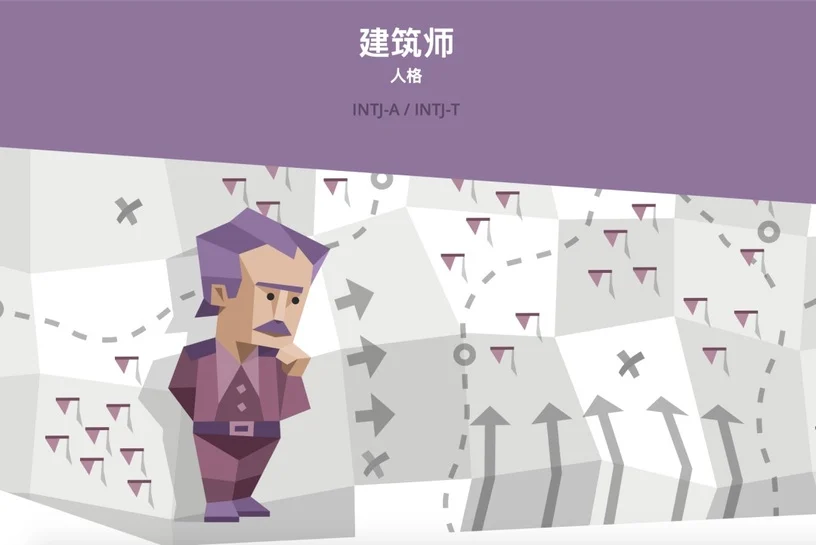
INTJ
建築師
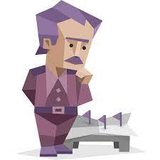
- 優勢：危機處理、解決問題的執行力、整合型思維、有遠見
- 特質：理性、不畏權威、低調但自負、覺得任何事都能改進
- 聽取不同觀點，多深入了解別人的意見，能突破盲點。
- 別因太過專注於目標而給人壓力，或變得不近人情。
- 適時讓大腦放鬆，學著活在當下。
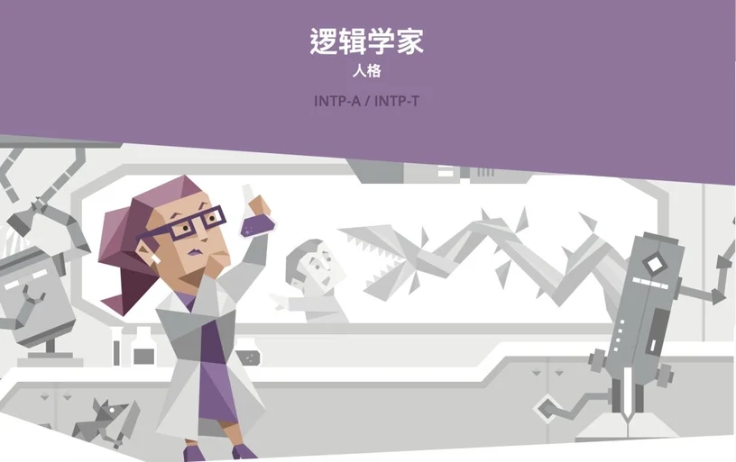
INTP
邏輯學家
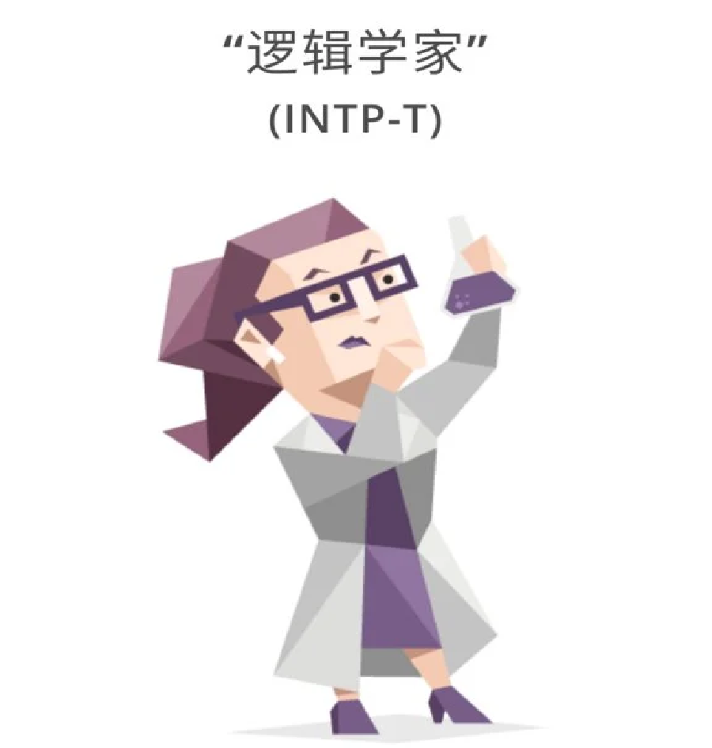
- 優勢：分析歸納、邏輯推理、謹慎評估、講究品質與專業
- 特質：靜中立、客觀接受批評、習慣提問、講究邏輯
- 多與人分享你思考的事，不然別人會以為你沒有想法。
- 試著做決定更明快，給別人更清楚的答案。
- 更積極的行動力，有些事不用等全部掌握再行動。
NF族群：理想主義者
天馬行空、善於同理他人、語言能力佳、興趣多元、悲天憫人、樂於助人、理想性高
建議：
- 給予想像空間，鼓勵激發靈感。
- 建立溫暖互助關係，以人為中心。
- 追求長遠的目標或意義。
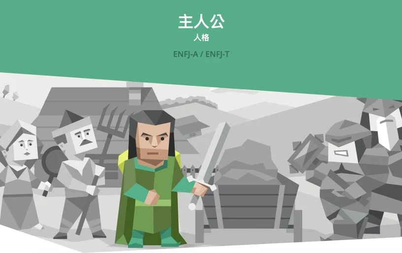
ENFJ
主人公
- 優勢：表達能力佳、善於溝通、有影響力、自我提升、促進合作
- 特質：看重和諧、對負面批評敏感、喜歡指導別人
- 學習接受自己和他人的不完美，不要總是想改變別人或配合他人。
- 不用急著自己擔起所有事情，學會冷靜等待。
- 學會客觀面對批評及衝突，留意你的情緒化可能會讓人難招架。
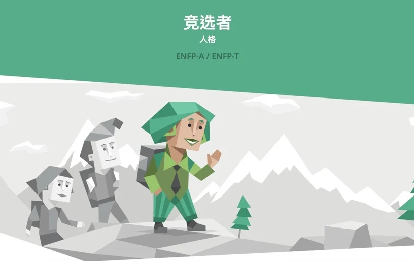
ENFP
競選者
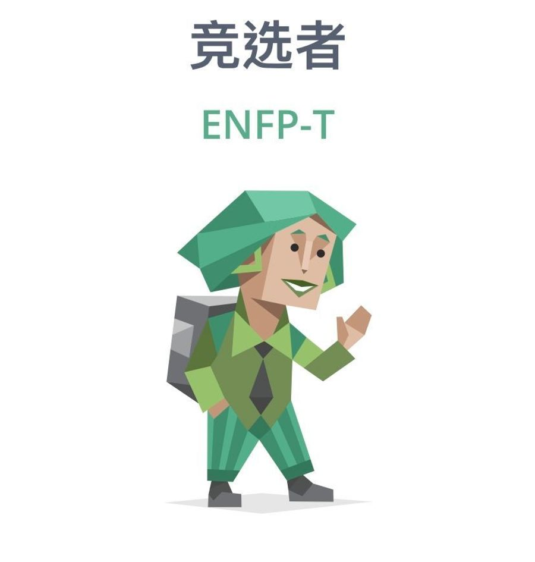
- 優勢：擅長腦力激盪、點子多、為弱勢族群發聲
- 特質：好相處、心胸開放、欣賞他人、想法較發散
- 練習集中注意力，其他人會更好與你共事。
- 避免虎頭蛇尾，加強自律及堅持到底的毅力。
- 學會做計畫、執行，多考慮風險管理。
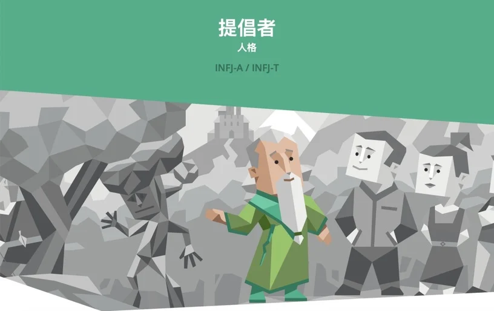
INFJ
提倡者
- 優勢：善用隱喻、勵志、複雜觀念簡化、直覺性、看透本質
- 特質：重隱私、對人抱持認可、支持、鼓勵態度
- 不要把每件事都想得太遠，或過度堅持。
- 主動去與外界連結，多去注意、適應外界的環境動態。
- 放鬆對人際關係或精神生活的品質要求。
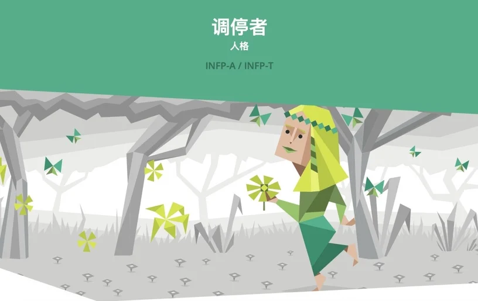
INFP
調停者
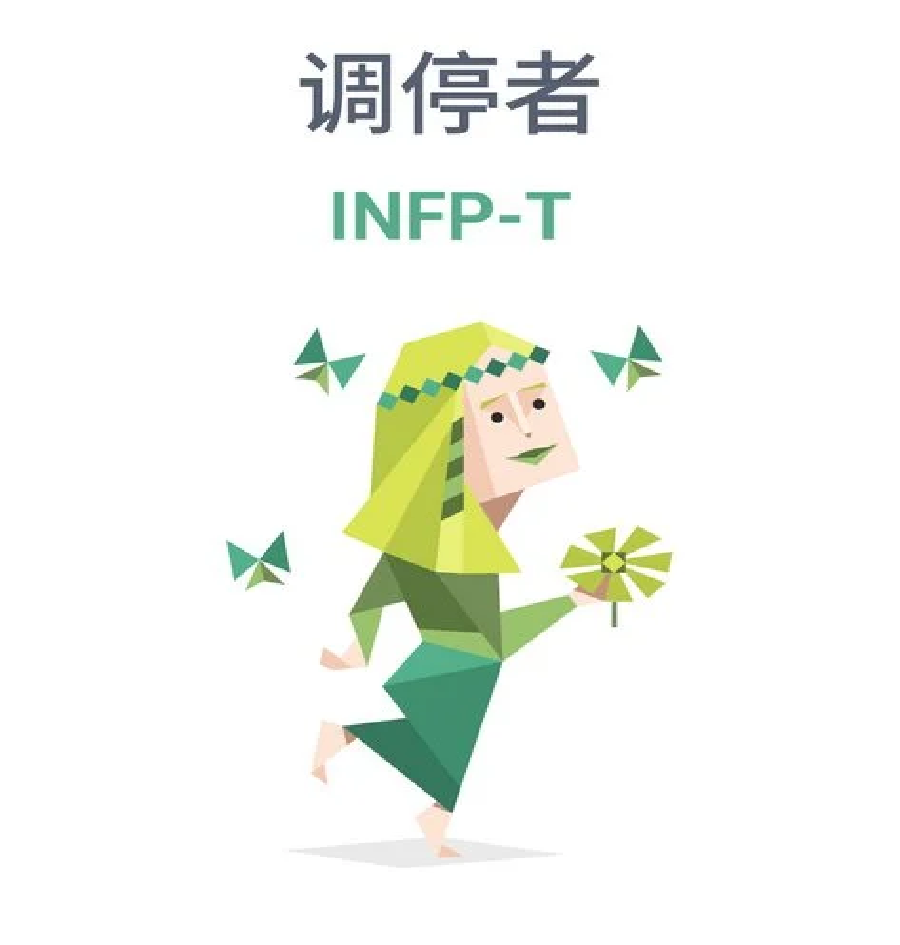
- 優勢：有創意、人際調和、支持者、認真貢獻、藝術天分
- 特質：善解人意、有彈性、激發討論、敏感
- 別總是拖到最後關頭才發聲，主動表達對你重要的價值觀。
- 肯定自我，學會建立心理界線，不讓人隨意越界。
- 主動向人求助或尋求資源。